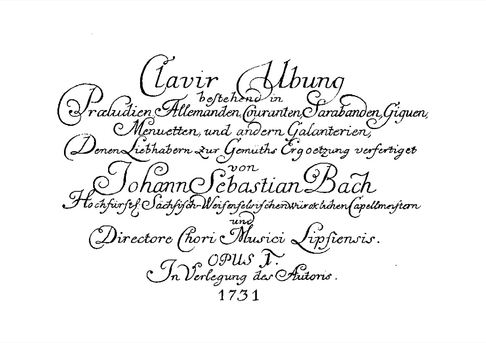

Clavier-Übung: Bach publishes himself

By the time Bach approached fifty he had written a manuscript legacy the size of a library, and almost none of it existed in print. This was not unusual — a working cantor's music lived in performing parts, not published scores — but it meant that a composer's posterity was, quite literally, whatever he chose to engrave. Beginning in the late 1720s, Bach chose. The series he issued across the following decade carries the deliberately modest title Clavier-Übung — "Keyboard Practice," borrowed from his Leipzig predecessor Kuhnau, as if the whole enterprise were a set of student exercises — and it was engraved and sold largely at his own expense and risk, distributed through a network of personal agents that included, touchingly, old Georg Böhm up in the north, the organist who had shaped Bach's own apprentice years. No publisher solicited any of it. The century's supreme keyboard music reached print because its composer paid for the copper.
The four volumes, taken in order, tell a story. Part I, issued piece by piece from 1726 and collected in 1731, gathered the six Partitas as his self-declared Opus 1 — a nearly fifty-year-old master announcing himself with an opus number like a debutant, and offering the German dance suite at terminal sophistication. Part II, in 1735, bound together the Italian Concerto and the French Overture: the two great national orchestral styles of the age transcribed into pure two-manual harpsichord, a compare-and-contrast exhibit issued deliberately as a pair, as if to say that a single instrument under the right hands could contain both nations. Part III, in 1739, turned to the organ: the "St. Anne" Prelude and its triple Fugue in E-flat framing chorale settings of the catechism hymns — Lutheran doctrine rendered as contrapuntal architecture, a volume posterity nicknamed the German Organ Mass. And Part IV, in 1741, was the Goldberg Variations, the variation-summa that closes the series and opens the encyclopedic late period.
Notice the design, because it is a design. The series ascends: suite, then concerto, then liturgy, then variation-summa; two manuals, then organ; approachable galant surfaces at the start, strict canon by the end. This is not a miscellany of available pieces but a curated public monument — the encyclopedic instinct that would dominate the last decade, here aimed for the first time squarely at posterity. And its timing gives it a polemical edge that the polite title conceals. Read against Scheibe's attack of 1737, which arrived mid-series and declared Bach's art turgid, over-stuffed, contrary to nature, the Clavier-Übung becomes a decade-long rebuttal in engraved copper: not a pamphlet, not an argument, but the evidence itself, laid out volume by volume in a marketplace that preferred easier pleasures. This — the Partitas' wit, the Italian Concerto's brilliance, the organ Mass's gravity — is what the "excess of art" can do, purchasable by anyone who cared to test the critic's verdict against the music.
The economics deserve a final look, because they connect this card to the era's other front. The same years in which Bach was itemizing to the council why church music required funding it would not provide, he was spending his own money to put his keyboard art before the public — the institutional battle and the self-publishing venture as two responses to a single condition, namely that no existing structure valued what he did at what it cost. And the choice of what to immortalize had consequences he could not have foreseen. Bach engraved keyboard works, not cantatas; the vocal music stayed in manuscript, scattered at his death, and slept for generations. When the next century met Bach, it met him first at the keyboard — and that keyboard-first Bach of the eclipse and revival eras is, in part, Bach's own editorial decision, made volume by volume in these years. A composer's afterlife, it turns out, is not only what he wrote but what he paid to print; the Clavier-Übung is where Bach, denied a fair hearing from his own institutions, quietly commissioned one from the future.
Continue with the era essay: Leipzig II: coffee-house concertos and paper wars, or follow the series to its summit: the Goldberg Variations.
Original prints of Clavier-Übung I–IV (Bach Digital)
Wolff, The Learned Musician, ch. 10
→ full bibliography & links